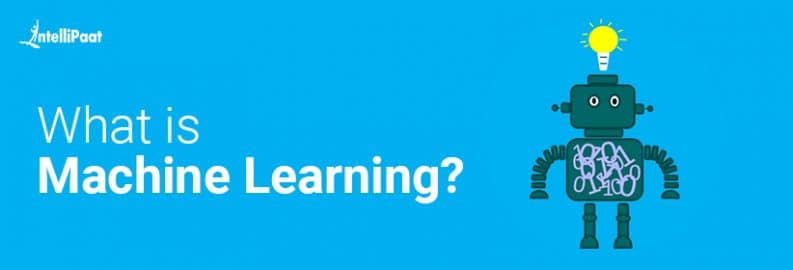
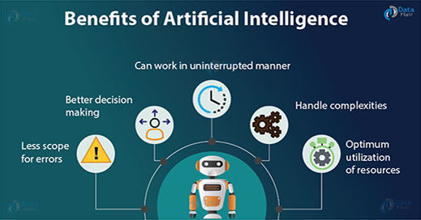
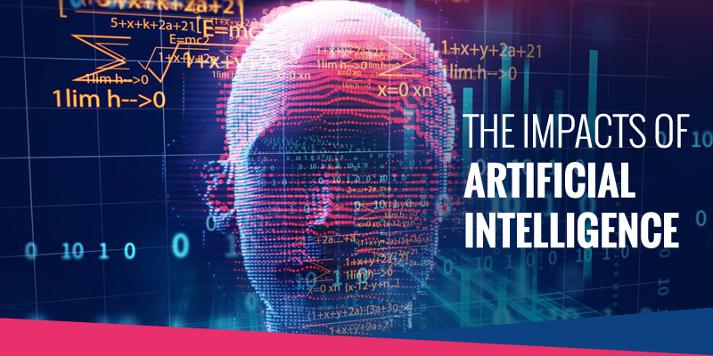

- Machine learning involves the use of Artificial intelligence to enable machines to learn a task from experience without programming them specifically about that task.
(In short, machines learn automatically without human hand holding)
- This process starts with feeding them good quality data and then training the machines by building various machine learning models using the data and different algorithms.
- The choice of algorithms depends on what type of data we have and what kind of task we are trying to automate. However, generally speaking, Machine Learning Algorithms are divided into 3 types.
- Supervised Machine learning Algorithms,Unsupervised Machine Learning Algorithms, and Reinforcement Machine Learning Algorithms.
For more information about Machine learning click these link here: Wikipedia
An Application of Machine Learning: Using Machine Learning to Predict Baseball Steal Signs
Click Me to Scroll Down

- More powerful and more useful computers
- New and improved interfaces
- Solving new problems
- Better handling of information
- Relieves information overload
- Coversion of Information into knowledge
For more information about How AI- is beneficial
Article
Click Me to Scroll Up
Click Me to Scroll Down

AI will cause the workforce to evolve
Will require society to find their passion with new responsibilities that require human abilities
Projected for about 7.2 million jobs could be created between 2017-2037
Artificial intelligence will collect more and more data where society’s privacy becomes compromised
Such repercussions would devolve into social oppression such as China is doing with its social credit system
Positive impacts of artificial intelligence of society
AI can help improve society on a day to day basis such as improving the efficiency of our workplace
Free up the human workforce to do work they are better equipped for with tasks involving creativity and empathy among others.
It will dramatically influence healthcare
Negative impacts of artificial intelligence on society
AI bias
Loss of certain jobs
Shift in Human experience
Global regulations
Accelerated hacking
AI terrorism
Click Me to Scroll Up